Visual and Rigorous Proof of Universal Approximation Theorem (UAT)
Acknowledgement: This course (CSCI 8980) is being offered by Prof. Ju Sun at the University of Minnesota in Fall 2020. Pictures of slides are from the course.
Gaoxiang: This lecture is scribed by myself and Andrew Walker.
Why should we trust Neural Networks (NNs)?
We will start by looking at the supervised learning. Although today’s NNs are not only for the supervised learning, we will use this embedded illustration from machine learning to give you some ideas.
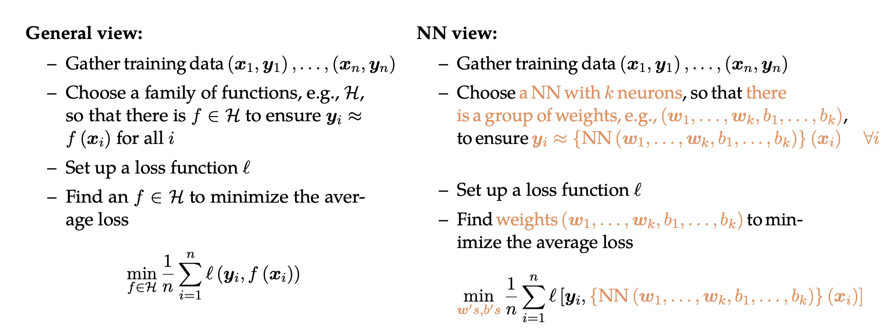
As shown above, the only difference between these two views is that we choose a NN architecture instead of selecting a family of functions. The idea behind both views is function approximation, and we want to emphasize more in function approximation to give you a more accurate description of supervised learning.
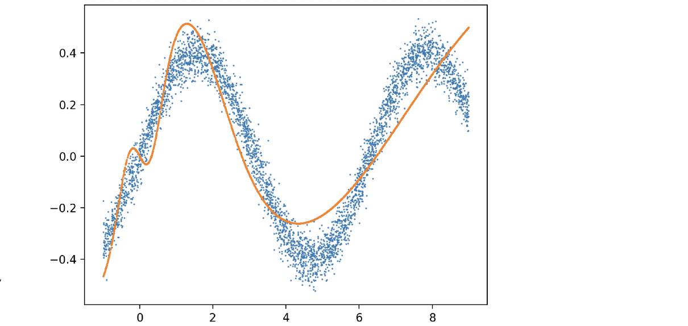
Basically you can think of supervised learning in this way. First of all, we have an underlying true function , and our data can be generated by
with dense sampling, which are the blue dots in above. Second, we choose a family of functions
. The purpose here is to learn from this family
to find a function
(orange curve) that is close to the ground truth function
. This is different with the views mentioned earlier. Those views are to fit the data, which is more about the training error. But here if you really find the ground truth function by learning, you will do perfectly well on eliminating test error.
There are two aspects of this more accurate description. Does our family of functions really have the power to find
? This is what we called Approximation Capacity. Another important aspect to consider is Optimization & Generalization, because sometimes even you choose a powerful function class, it does not guarantee that you will find the best
. Since optimization will be covered later in this class, now let us look at the capacity of our family functions.
Before we look at the capacity of NN, let us clarify some notations.
- k-layer NNs: with k layers of weights (along the deepest path)
- k-hidden-layer NNs: with k hidden layers of nodes
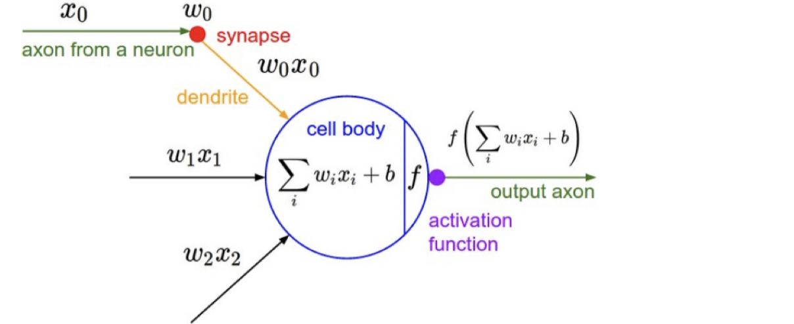
Now let us think of a single-output (i.e., ) problem, and we can start with one neuron. It’s basically summing up all input with weights, add a threshold/offset, and pass through a non-linear function
which is called the activation function
. As
shown, the output that a single neuron can represent largely depends on what kind of activation function
we have. If we choose an identity function, it will turn out to be linear, which is not powerful. If we choose a sign function like perceptron, which is a 0/1 function with hyperplane threshold, it has some constrain as well.
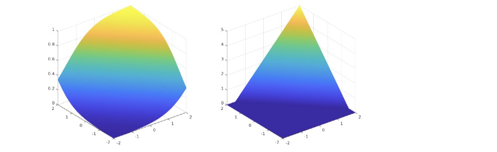
For instance, if we have 1s on 1-quadrant and 3-quadrant, and 0s on 2-quadrant and 4-quadrant, we cannot draw a line to classify these two classes. Even if we choose sigmoid function and ReLU, we still cannot solve the quadrants’ example mentioned earlier, because all of the functions above are monotonic in a certain direction (as shown in above), when the ground truth function, that we try to get close to, is not monotonic.
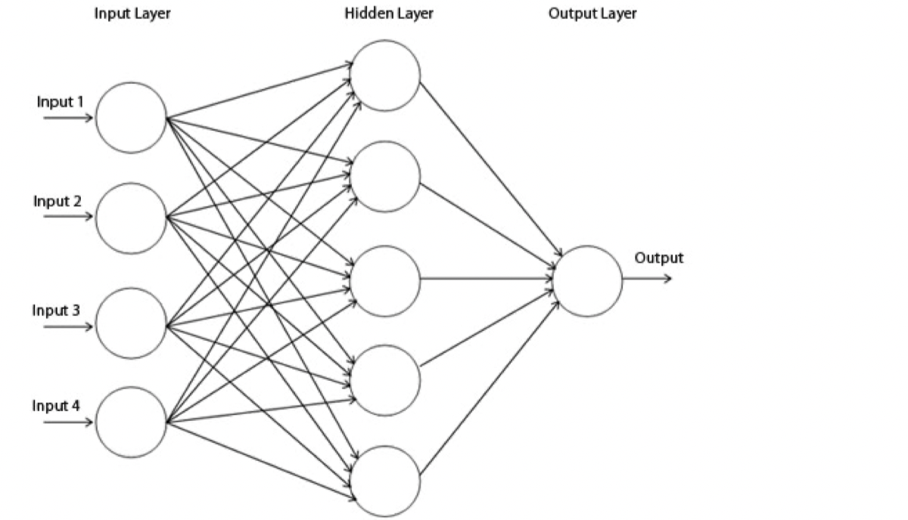
Instead of trying to think of a very complicated , what if we add more layers like
? Adding depth alone is not going to help because it’s multiplying weights repeatedly, and composition of linear operation will still be linear. Therefore, we want to try not only adding layers but also adding nonlinearity into NNs. Surpassingly, this turns out to be really powerful. This leads to the fundamental belief of DNNs – Universal Approximation Theorem (UAT). This theorem states:
The 2-layer network can approximate arbitrary continuous functions arbitrarily well, provided that the hidden layer is sufficiently wide.
Why should UAT hold?
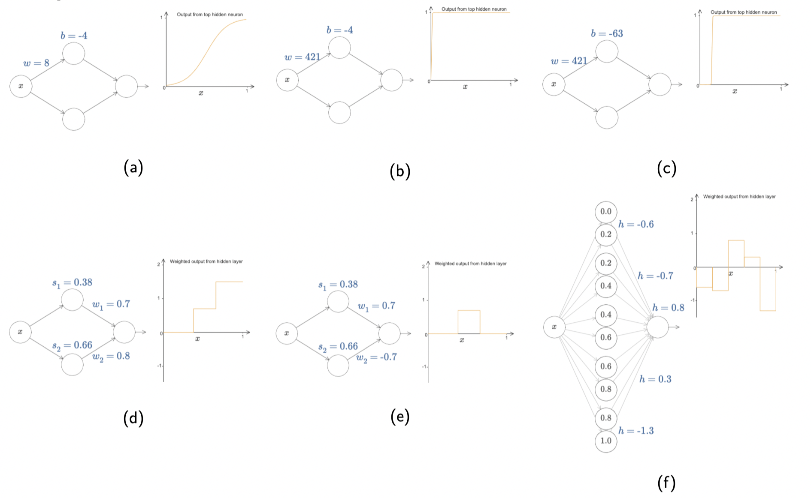
The live demo is from http://neuralnetworksanddeeplearning.com/chap4.html.
Let us start with a single-input-single-output function using sigmoid
, whose graph is typically like (a). If we increase the value of
significantly, we will get a function which is almost the same as step function, as illustrated in (b). Next, if we change the value of
, what we’re doing is moving the graph horizontally like ©. Now let us consider two neurons summing up in (d), which is similar to adding two step functions together. More interestingly, if we change the weight of
to the opposite of
, we will get a bump function in (e). Once we take more neurons into account, we will end up with lots of consecutive bumps in (f).
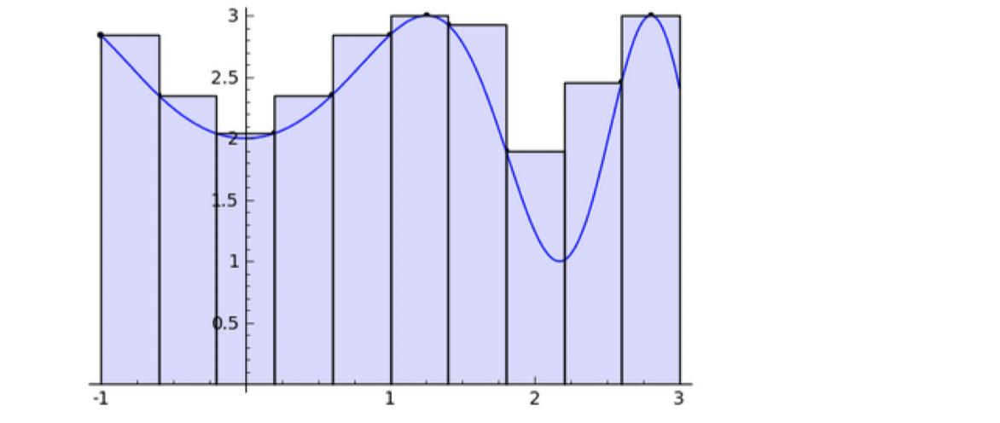
This is really similar to Riemann Sum while defining an integral, where you can draw a smooth curve passing through upper bound’s midpoint of the bump (Midpoint Rule) or the top-left corner of the bump (Trapezoidal Rule). Therefore, this 1-hidden layer NN is powerful enough to approximate many non-linear functions if we want to expend the number of neurons as many as we need. Now the question is how about high-dimensional?
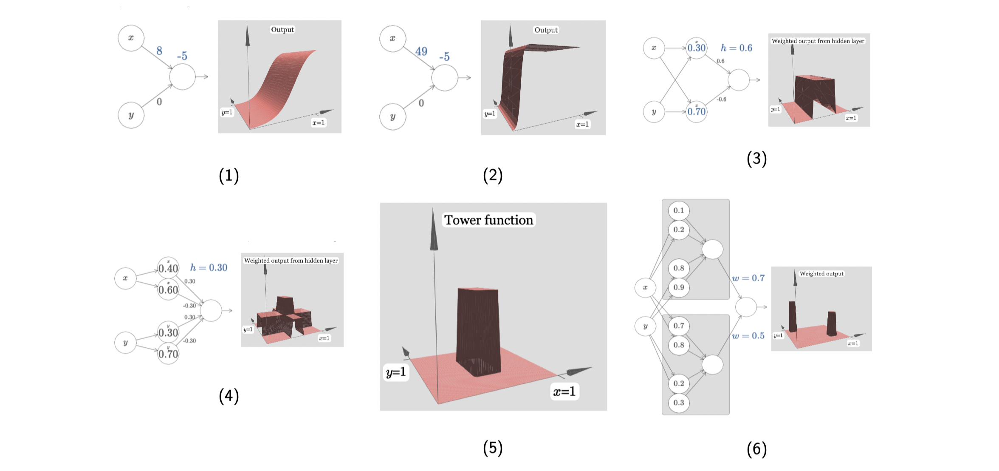
The idea is similar in high dimensions. This is a two-inputs-one-output function using sigmoid. First of all, we turn off the weight in one direction, and the graph just looks like sigmoid in (1). If we again increase the weight sharply, we will get a step function in (2). Now let us turn on weight for another direction, and repeat the previous steps. What we get is is a bump function (two step functions in two orthogonal directions) in (3). Next, if we add more neurons to each direction, then there will be summing up of step functions in each direction, which will generally lead to summing up of bump functions in (4). We observe that if the height of a bump is
, then in (4) the highest bump is in height
. Having comparing to the 1D case mentioned earlier, we want to get only the highest bump, which we call a tower in (5), by applying some offsets/cut-off positions. At this point, if we double the neurons in the hidden layer corresponding to each input, we’re able to get two towers. I believe you will get the idea at this point. More neurons in the hidden layers, more towers we can construct.
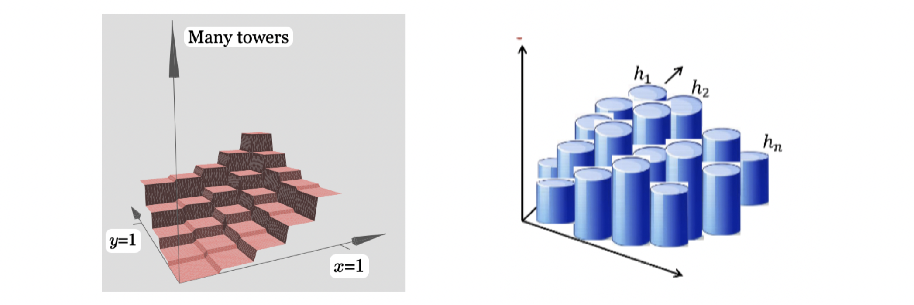
As shown in the left above, I believe you’re convinced that with 1 hidden layer, we can construct many towers (in this case, square towers as inputs are 2D), to approximate any 2D functions arbitrarily well. This is also what we called Shallow Network Networks, which is NN with 1 hidden layer. The example above in based on 2D input , what if we want to have high-dimensional input
. Then we don’t have to be as rigid as we were in only x and y directions to construct many square towers. As the input space increases, we could have had more cuts on our square towers then it will be closer and closer to many circle towers. At this point, you might ask what if the output space is also high-dimensional such as
functions. The answer is we can approximate each
separately and then glue them together. I believe you’re convinced that a shallow NN or a 2-layer NN is already powerful enough, but one constrain obviously is that we need lots of neurons if we only have 1 hidden layer. Later we will introduce Deep Neural Networks (DNNs) and why we want to add one more hidden layer.
UAT in rigorous form
The Universal Approximation Theorem is a fundamental theorem underpinning the power behind the neural network’s prediction ability. The first formulation of the UAT (that has now developed into many variations) was developed in the late 1980’s. This section includes the mathematical discussion of the UAT.
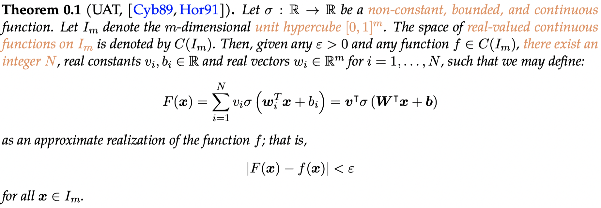
Breaking this theorem down, we see is an activation function. The variable
is the arbitrary level of precision we would like to reach between our target function
and our neural network function
. This theorem states that within the constraints, a single layer neural network with a large enough number of nodes can fit with arbitrarily small error any target function. The visual proof in the last section was intuitive, but the rigorous proof requires functional analysis and quadratic theory. We will not cover the rigorous proof in this course.
Notice the key limitations in the original formulation of the UAT — the target function must lie on the hypercube, the activation function must be non-constant, bounded, and continuous, the target function must be continuous. These statements have been somewhat addressed since the original formulation. The target function may lie on a space other than the hypercube; it just has to be compact (bounded and closed). A commonly-used activation function (ReLU) is not bounded, although a composition of ReLUs is. The target function needs to be continuous, although the classification problem is by definition discontinuous. However, the discontinuous classification can be approximated arbitrarily well by a very steep sigmoid function, for example.
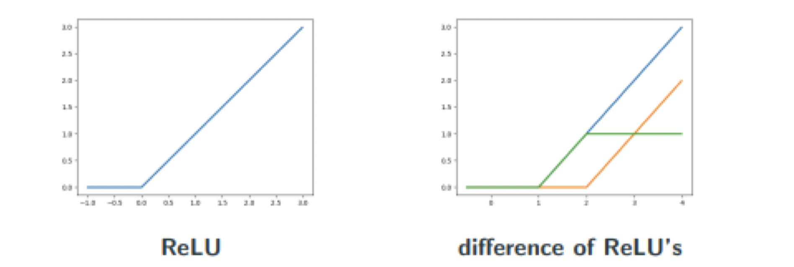
In fact, the UAT has been found to apply for as general as the set of all non-polynomial functions. [LLPS93]
From shallow to deep Neural Networks
The UAT says that a shallow, single-layer neural network can hit arbitrarily accurate levels of prediction. So why do we use multi-layer (or deep) neural networks? The UAT says the number of nodes is an integer N, but places no upper limit on N.
The value of N blows up very quickly for higher-dimensionality datasets. To show this, we return to our visual proof terminology. Assume our target function is 1-Lipschitz (essentially, it does not ever have a slope greater than 1 or -1. Formally: ) and has a domain in
. With this in mind, to achieve
accuracy, we need at most
bumps per unit length along the domain. For a 2D target function, we need
. In fact, in general, for a target function with domain n-Dimensions, we need
bumps.
As you can see, this exponential growth makes single layer neural networks infeasible for higher dimension problems. The value of deep NNs is that they can provide much better computing power. In 2017, it was shown that DNNs can have the number of nodes while 2-layer NNs need
for Boolean functions in domain
.
To show this, we define two classes of functions —
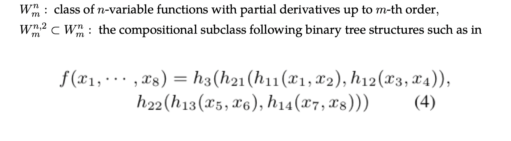
The 2017 theorems:
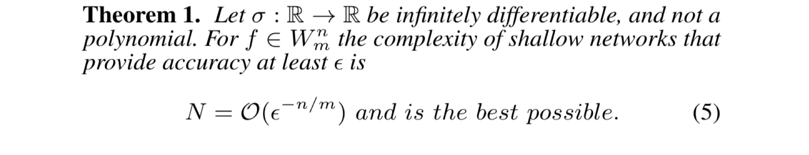
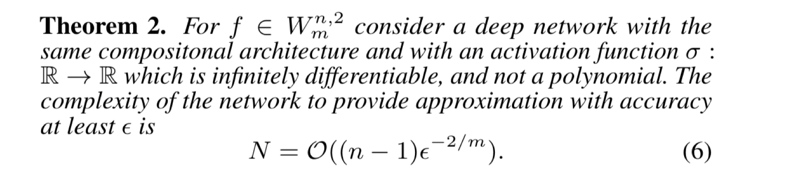
These theorems essentially show (within the constraints) that shallow networks are exponential with respect to domain dimension and that deep networks are linear with respect to domain dimension.
Since we have covered so many variations on the UAT, you may be wondering, what is the most general variation of the UAT so far?
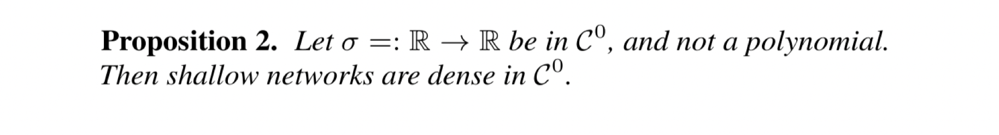
This activation function must be continuous and not a polynomial. Then, given a target continuous function, you can find a shallow neural network that approximates the target function arbitrarily well.
However, deeper is not always better. Theorems [LPW+17][KL19] have shown that to maintain the UAT property of arbitrary approximation power, deep networks need around nodes per hidden layer in
.
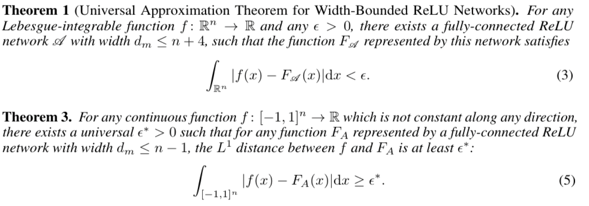
However, this is still an active area of research and in practice, the most optimal network is often forgone for a less theoretically optimal but still practically better option.
Conclusion
While designing your network, do not try to use these theorems and mathematical results to advise your design. Deep Learning is a very new and volatile field and it is often the case that researchers develop new architectures without knowing why they work, and later on mathematicians try to prove why a certain architecture is optimal.
The reason we covered the UAT is so we get an understanding of why we can just take a neural network to approximate some function. If we have no other understanding of the target function, maybe a neural network would be a good choice.
Reference
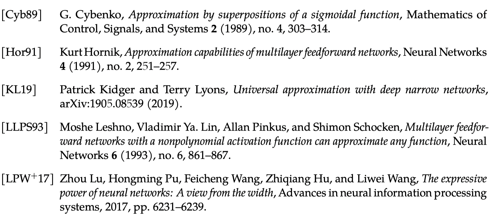